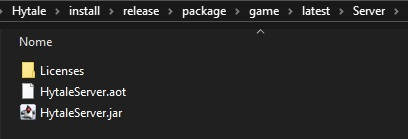
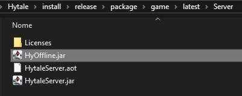
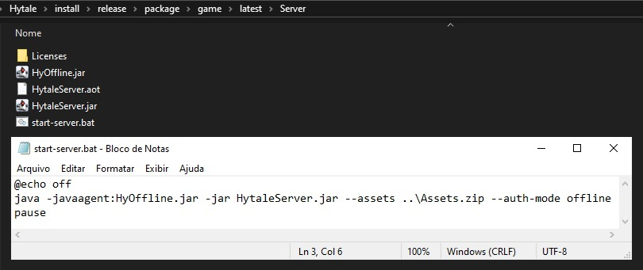

How to Setup a Hytale Server
Follow this step-by-step guide to host your own Hytale server for you and your friends.
Prerequisites: Make sure you have HyLauncher installed and have run the game at least once to generate the necessary files.
1 Install Java JDK 25
Hytale servers require Java Development Kit (JDK) 25 to run properly. If you don't have it installed:
Download JDK 25 from AdoptiumFollow the installation wizard and make sure to add Java to your system PATH when prompted.
2 Download HyOffline.jar
You need to download the HyOffline plugin that enables offline server functionality.
Download HyOffline.jarNote: Yes, you need this file to be able to join the server using HyLauncher. Your friends must be using HyLauncher or the official launcher.
3 Navigate to Your Game Files
Open your Hytale installation folder. You should see a structure similar to this:

Locate the Server folder inside your game directory.
4 Place HyOffline.jar in Server Folder
Move or copy the downloaded HyOffline.jar file into the Server folder.

5 Create Start Server Script
Inside the Server folder, create a new file called start-server.bat and add the following content:
@echo off
java -javaagent:HyOffline.jar -jar HytaleServer.jar --assets ..\Assets.zip --auth-mode offline
pause
6 Start Your Server
Simply double-click the start-server.bat file you created. A console window will open and your server will start.
Note: The first startup may take a few moments as the server generates necessary files and loads assets.
7 Allow Friends to Connect (Port Forwarding)
By default, your server only runs locally. For friends to join, you need to set up port forwarding using a service like PLAYIT.gg:
Visit PLAYIT.ggPLAYIT.gg provides free tunneling so your friends can connect without complex router configuration.
Tutorial: Search YouTube for "how to setup playit.gg" for detailed video guides on configuring the tunnel for your server.
8 Share Server Address
Once PLAYIT.gg is configured, you'll receive a server address (e.g., example.gl.at.ply.gg:67420).
Share this with your friends so they can connect to your server!
Troubleshooting: If your server won't start, make sure you have JDK 25 installed, HyOffline.jar is in the correct folder, and the Assets.zip path in the bat file is correct.